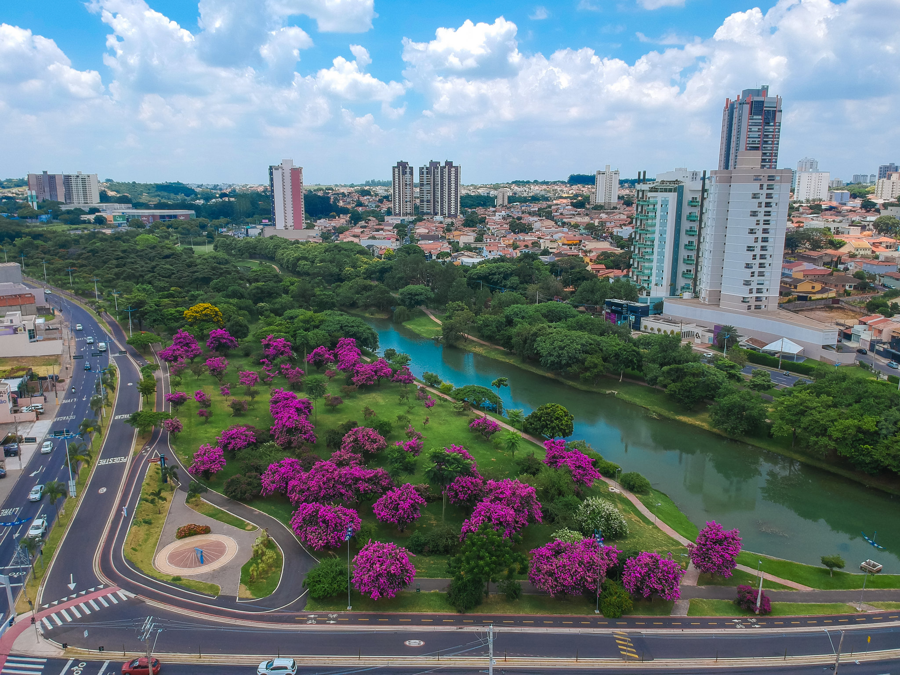

Indaiatuba é uma das cidades com melhor índice de qualidade de vida no Brasil, unindo crescimento econômico com preservação ambiental. O município é destaque em planejamento urbano, tecnologia e políticas públicas voltadas para sustentabilidade, o que a coloca como uma das cidades mais inteligentes do estado.
Um dos principais pontos turísticos é o Parque Ecológico, um espaço amplo e gratuito para lazer e contato com a natureza. Além disso, a cidade conta com museus, praças e eventos culturais ao longo do ano. A qualidade de vida em Indaiatuba atrai visitantes e novos moradores que buscam tranquilidade sem abrir mão da modernidade.
Na gastronomia, destacam-se restaurantes típicos e culinária internacional. Como curiosidade, a cidade tem forte presença de descendentes de italianos, o que influenciou bastante sua cultura e culinária.
